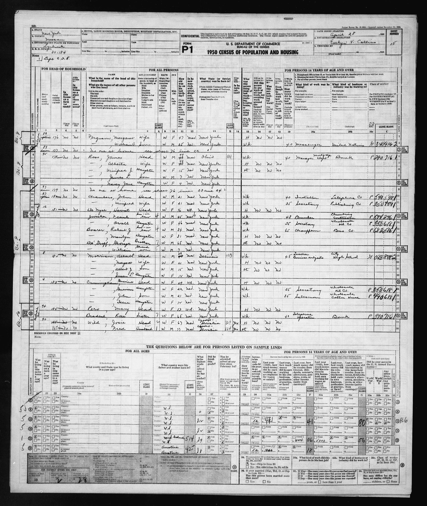
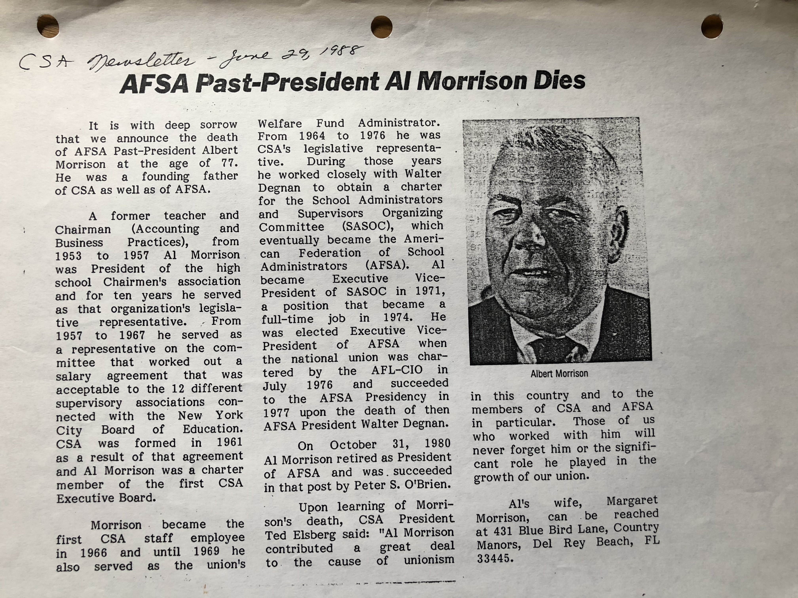

Albert Llewellen Morrison

Extract from the 1940 census of Queens, New York. The pertinent information begins on line 45.
The census indicates that Albert L. Morrison, age 29, was the head of a household that included his wife Margaret, age 31, his son Albert J., age 5, and his daughter Susan, age 2.

Extract from the 1950 census of Lynbrook, New York. The pertinent information begins on line 8.
The census indicates that Albert L. Morrison, age 39, was the head of a household that included his wife Margaret, age 41, his son Albert J., age 15, and his daughter Susan L., age 12.

"AFSA Past-President Al Morrison Dies", CSA Newsletter, June 29, 1988